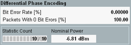

Differential Phase Encoding Results (EDR)
The purpose of the EDR differential phase encoding measurement is to verify the phase encoding of the data by the EUT.
The measurement is only available in the combined signal path scenario.

Bluetooth multi-evaluation: differential phase encoding results (EDR)
The following results of the EDR differential phase encoding measurement are provided:
- "Bit Error Rate": number of bit errors in the received burst, as a percentage of the total number of bits received.
- "Packets With 0 Bit Errors": number of bit error free packets received, as a percentage of all the bursts received
- "Nominal Power": average burst power during the carrier-on state, measured within the "Enhanced Data Rate Filter Bandwidth".
Read "Differential Phase Encoding Measurements" to measure the differential phase encoding in line with the test specification for Bluetooth wireless technology. |
For query of the results via remote control, see "Differential Phase Encoding Results (EDR)".